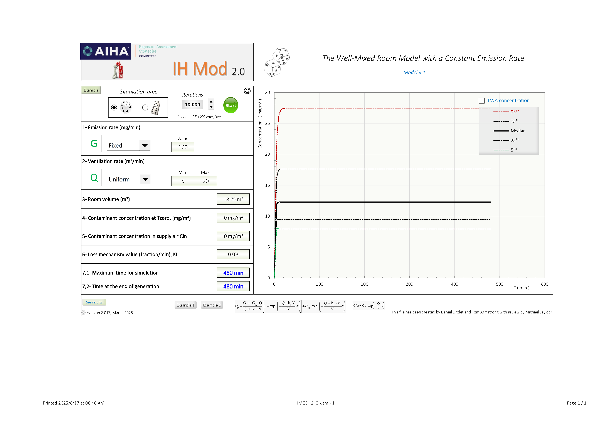
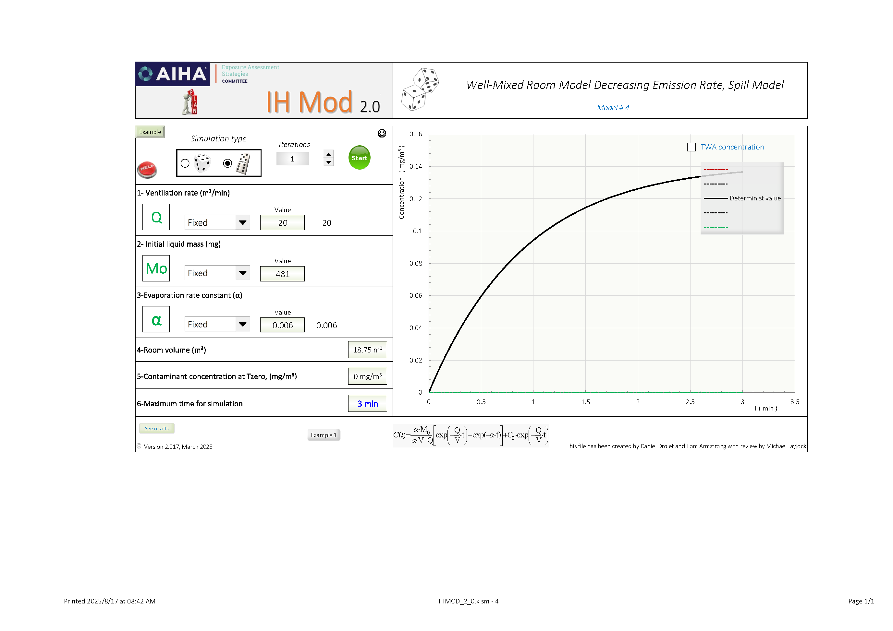
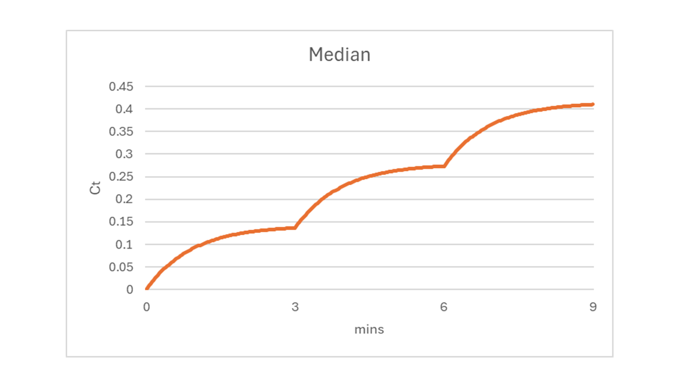

CH10_Cleaning-process
第十章：醋酸清潔作業之暴露風險評估 (單頁摘要)
評估一項使用4%醋酸溶液清潔面板的作業，透過3種不同情境WMB模式推估，量化工作者的暴露風險。
一、 關鍵參數
為進行評估，我們蒐集了以下關鍵參數：
- 危害物： 4% 醋酸水溶液。
- 暴露基準： 八小時日時量平均容許濃度 (TWA-8 OEL) 為 25 mg/m3。
- 作業活動： 每3分鐘於面板施用約 481 mg 的醋酸。
- 評估環境： 定義一個體積 (V) 為 18.75 m3，通風量 (Q) 為 20 m3/min 的虛擬工作空間。
二、 暴露模型評估與結論
我們採用WMB三種不同複雜度的模型進行比較，核心差異在於對「蒸發行為」的假設。
- 模式一 (保守估算 - 快速蒸發): 假設醋酸立即且完全蒸發。此為最保守的高估法，得出 TWA-8 為 7.0 mg/m3 (OEL的28%)。
- 模式二 (擬真估算 - 遞減蒸發): 模擬真實的遞減蒸發現象與濃度累積效應。此模式最貼近實際情況，得出 TWA-8 為 4.7 mg/m3 (OEL的19%)。
- 模式三 (簡化估算 - 穩態平均): 採用簡化公式計算重複性作業的長期平均濃度，得出 TWA-8 約為 7.0 mg/m3 (OEL的28%)，證明其為一有效的快速評估工具。
| 評估模式 | 濃度估算 (TWA-8) | 與 OEL (25 mg/m³) 比較 |
|---|---|---|
| 模式一 (保守) | 7.0 mg/m3 | 28% (低風險) |
| 模式二 (擬真) | 4.7 mg/m3 | 19% (低風險) |
| 模式三 (簡化) | 7.0 mg/m3 | 28% (低風險) |
最終結論
三種模型的評估結果一致顯示，此作業的醋酸暴露濃度遠低於法規標準，屬於可接受風險。最貼近真實情況的模型（模式二）估算值僅為容許濃度的19%。考量到作業中面板會移出、擦拭巾會被清理，實際暴露量可能更低，因此模型結果已為此作業的安全性提供了強力的數據支持。
綜合來看，本次建模分析確認了 EHS 團隊的初步專業判斷：相對於法規 OEL，此作業的暴露風險確實較低。然而，模型同時也提供了量化證據，指出在未考慮額外控制措施（如及時清除廢棄紙巾）的情況下，暴露水平可能無法滿足公司更為嚴格的內部管理標準。
因此，EHS 部門決定「安排此作業的現場採樣監測，但優先級低於其他更高暴露風險的情境」1。
參考
IH MOD 模擬 (穩態)
The Well-Mixed Room Model with a Constant Emission Rate

IH MOD 模擬 (3分鐘)
Well-Mixed Room Model Decreasing Emission Rate, Spill Model
| 3分鐘 | 每3分鐘累加 (疊加原理) |
|  |  |
prepared by Peter Ho. 114.08.17